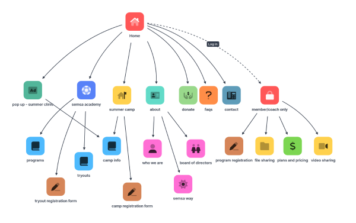
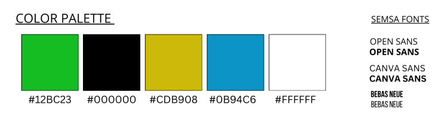

Goals
- Create a full website without the use of coding for simple upkeep
- Establish credibility through design, branding, and content
- Ability to register, pay, and keep track of players
- Consistent with other soccer academies on the market
Understanding the Mission
To start out, we needed to understand what the demographic was.


After this, we had weekly meetings where we discussed and what the creator of this academy, Whitney Howard envisioned for these players and what he wanted the site to look like. We referenced other soccer academy websites and started to design.


We had trouble visualizing the site, so I created a site map to show the way that a user could follow through the menu and ultimately help us organize information. We took one meeting to discuss this and confirmed that this organization was the way the client wanted. We also kept in mind of what was possible within Wix without coding. Below is also the style guide we were provided with.
 Final Design

We were able to finish the project in the expected timeline and the client was happy with the end product. We provided a tutorial for the person who is going to be overseeing the website after us, teaching them about Wix and how to access information needed to keep up with future players.

This project was enjoyable and I learned a lot about how to use Wix. It also taught me a lot about working with a client and sitting in a meeting setting. I thought this was a great experience and gave me a lot insight into freelance and passion projects. This is a sector of the industry I think I’d like to explore more in the future!